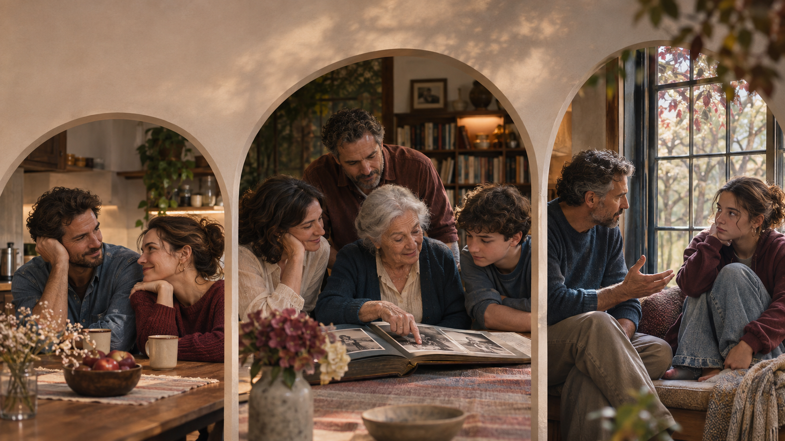
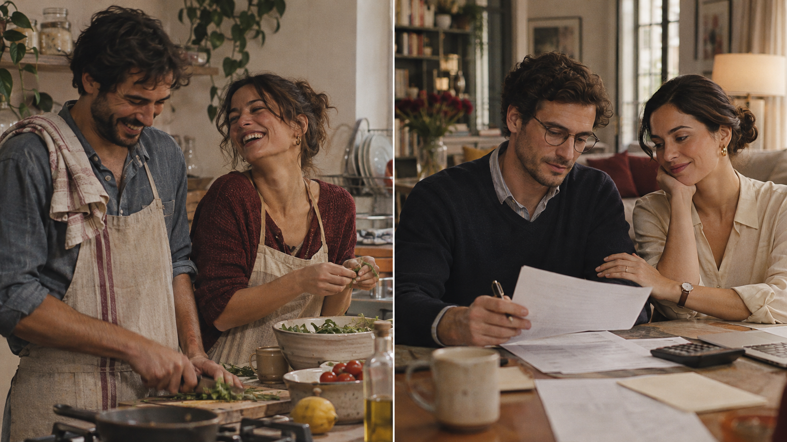
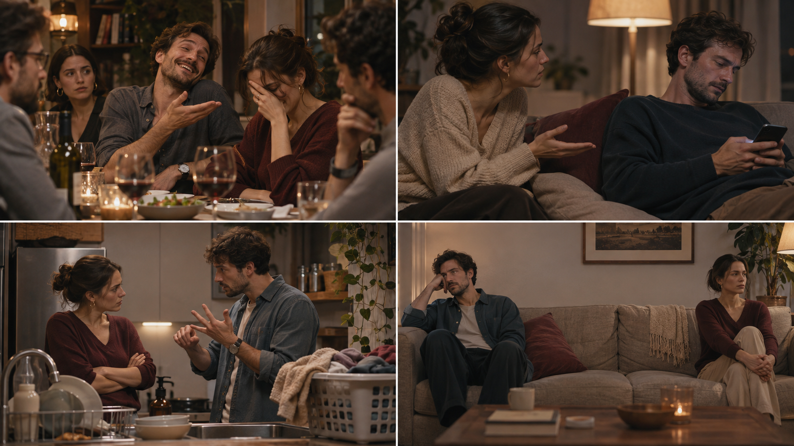
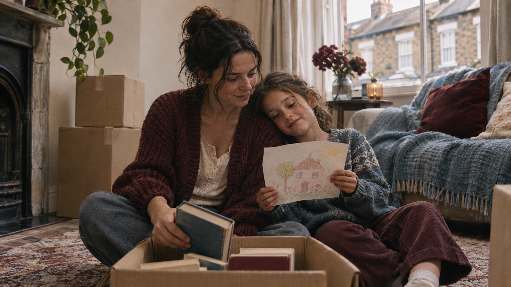
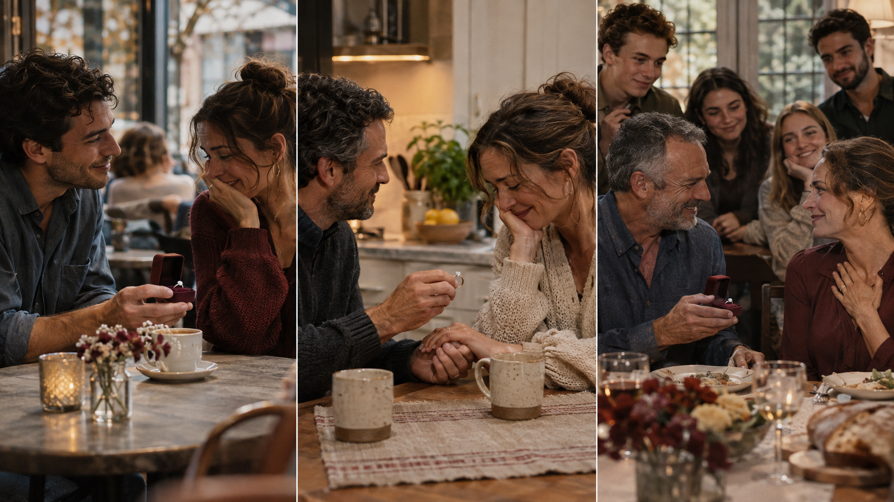
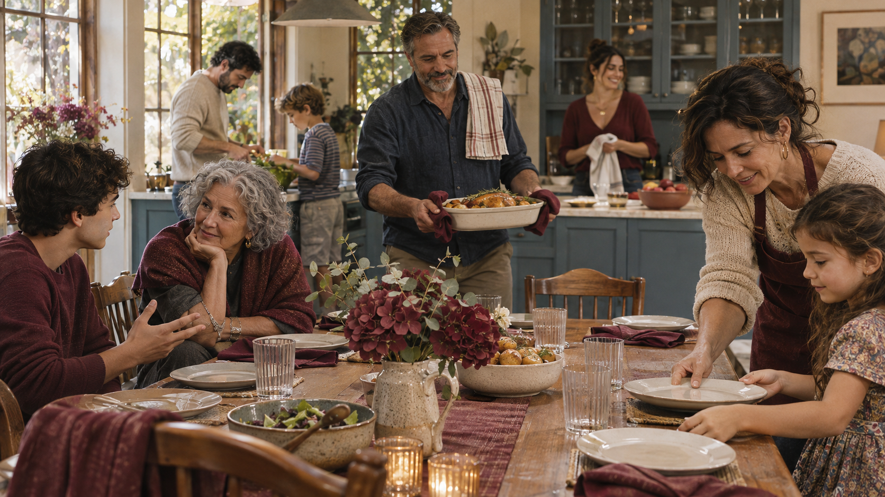
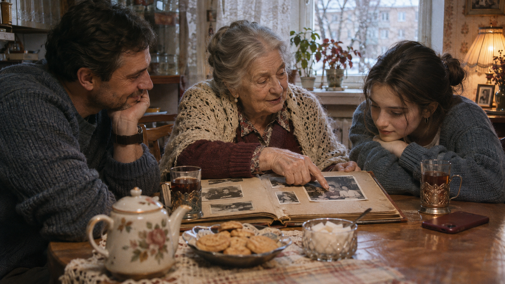
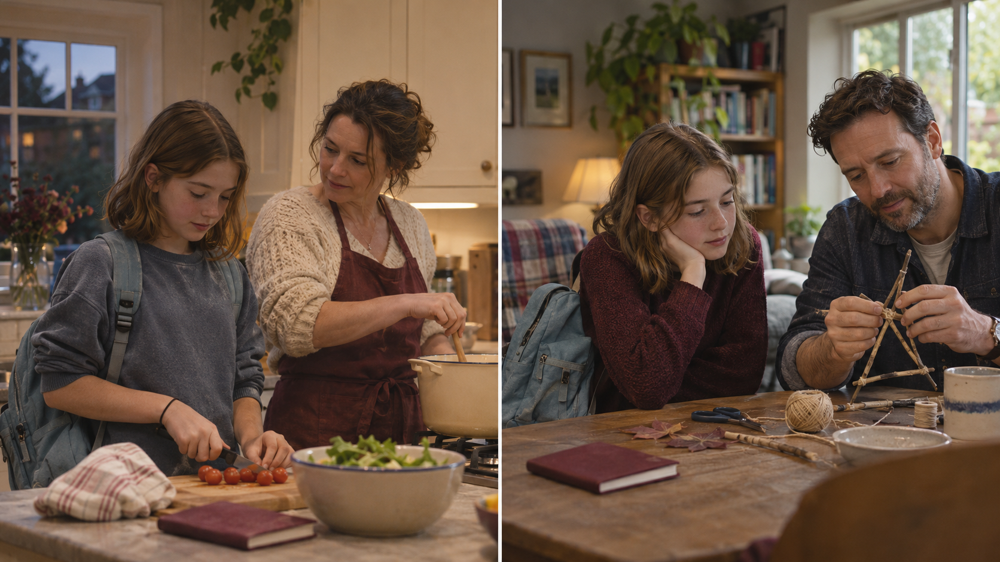

Sociology & Relationships · Love, Marriage, Family, Fathers & Children
Отношения мужчин и женщин · марьяж по любви или по расчёту · топ-10 ошибок · 3 истории пострадавших (Janet · Ralph · Becky · voiced) · marriage proposals · проблемы отцов и детей · гендерные войны · «кто главнее — мужчины или женщины» radio debate · pain of the century · ЕГЭ Задания 1 · 2 · 10 · 37 · 12 💭 философских вопроса на подумать. Афанасьева IX Unit 4 + оригинальные тексты 2026.

Family tree & relationships · основной словарь
Relationship status · впиши подходящее слово
- She was raised by a after her father died.
- They have been for a year but haven't set a date.
- Many young people today prefer to before getting married.
- After twenty years of marriage, they decided to and see how it went.
- Full of the twins went to the mother.
- He had been from his older brother since the inheritance row.
- The groom thanked his in- at the wedding speech.
- I have a close with my half-sister despite rarely seeing her.
- Her paid for her first laptop when she started university.
- Years of finally came out during the Christmas dinner.
Register · formal vs neutral vs casual
my partner или my other half. В документах — my spouse. На свадьбе — my beloved. В газетной статье про развод — the estranged couple. Один и тот же человек — пять разных регистров.- At a tax interview: «This is my ___.» → pick formal.
spouseboobetter halfmain squeeze
- Casual, to a friend: «Where's your ___?» → pick casual.
spouseother halfcohabiting partnerconsort
- News article about a famous couple separating: «The ___ couple were seen in court.»
quarrellingbroken-upestrangedsplit
- Wedding vow: «I take you to be my lawful ___.»
partnerboyfriendwedded wife / husbandmain squeeze
- HR form at work: «Marital status: ___.»
loved upsingle and ready to minglemarriedtaken
«Everyone who has a happy family background…» · comprehension

Family Background · a thinking-piece
Everyone who has a happy family background can consider themselves to be in luck. To have loving and caring parents, brothers and sisters is really important. By the time most of us turn sixteen or seventeen, we begin to think of how to build a family of our own. Yet the choices we face are harder than they look.
What kind of a person would you like to marry? Should it be a marriage of love or a marriage of convenience? Will it be till death do us part, or are you prepared for the fact that one in two modern marriages ends in divorce? How many children would you like to have — none, one, two, or a houseful? Will you have a good attitude towards your husband's or wife's parents? Where will you live — in the same city as your parents, or at a safe emotional distance?
Each of these questions is loaded. A marriage of love promises excitement, but may lack the quiet companionship that sustains a couple when the children leave home. A marriage of convenience — arranged, financial, or simply practical — can create stability, but often leaves one or both partners feeling unseen. Neither model guarantees happiness; neither guarantees pain.
What has changed in the twenty-first century is that choice itself has become a burden. Our parents and grandparents often had no real choice: you married whoever your family approved of, you had children, and the question of being personally fulfilled rarely came up. Today, we are told we must marry the one; find our soulmate; have a career AND a family; be a devoted parent AND an interesting adult. No wonder a growing number of young people postpone marriage altogether.
Based on: Афанасьева О.В., Михеева И.В. English IX, Unit 4 «Family Matters», p.172. Adapted and expanded for C1.
- According to the text, by what age do most people start thinking about building their own family?
twelve or thirteenfourteen or fifteensixteen or seventeentwenty or twenty-one
- «Till death do us part» refers to...
a prenuptial agreementa traditional wedding vow of lifelong commitmenta statistic about marriage lengtha line from a song
- A «marriage of convenience», according to the text, can create...
excitementstability but can leave partners feeling unseena quick divorceguaranteed happiness
- What does the author say has become a «burden» in the 21st century?
arranged marriagesfamily backgroundchoice itselfthe divorce rate
- Why do more young people postpone marriage today, according to the text?
because weddings are expensivebecause they are told they must have career AND family AND be personally fulfilledbecause they are lazybecause they can't find in-laws they like
- The author's tone towards both marriage models is best described as...
strongly in favour of love marriagesstrongly in favour of arranged marriagesneutral — both have strengths and riskscynical and dismissive of marriage
Ralph's Dilemma · reading + T/F/NS
Ralph's Dilemma
Ralph, a 28-year-old architect from Leeds, has been seeing two women for the past year — and the situation has become impossible.
Lisa, 27, is the woman he has been unofficially engaged to since university. She is calm, dependable, and — crucially — approved of by both families. Lisa works in insurance, owns a small flat, and has already started a pension plan. «Everyone keeps telling me she's a brilliant match,» Ralph admits. «And they're right.»
Maya, 24, is a jazz singer Ralph met at a festival in Edinburgh last August. She has no fixed address, no steady income, and — according to Ralph's mother — «no future.» But when Ralph is with Maya, he feels fully himself for the first time in years. «She reads me like an open book. She laughs at the things I actually find funny. I can't explain it.»
Ralph's parents have made their position clear: Lisa is the right choice, and Maya is a passing storm. Ralph's older brother, who went through a painful divorce three years ago, tells him the opposite: «Marry the one who makes you laugh. Everything else can be arranged.» Lisa, meanwhile, suspects something is wrong but has not confronted him. Maya says she has no desire to come between Ralph and «a sensible life.»
«The worst part,» Ralph says, «is that I keep thinking in terms of who will hurt least if I choose the other one. That can't be the right way to decide, can it?»
Based on: Афанасьева IX, Unit 4, p.179 — adapted dialogue scenario. All names fictional.
- Ralph has been seeing two women for the past year.
T — TrueF — FalseNS — Not Stated
- Lisa and Ralph became officially engaged at university.
T — TrueF — False (unofficially)NS — Not Stated
- Maya lives in Edinburgh.
T — TrueF — FalseNS — Not Stated (they just met there)
- Ralph's mother approves of Maya.
T — TrueF — False (she says Maya has «no future»)NS — Not Stated
- Ralph's older brother has been divorced.
T — True (three years ago)F — FalseNS — Not Stated
- Lisa has confronted Ralph about his behaviour.
T — TrueF — False (she has not confronted him)NS — Not Stated
- Maya wants Ralph to marry her.
T — TrueF — FalseNS — Not Stated (she said only she doesn't want to come between)
- Ralph thinks the question «who will hurt least» is the right way to choose.
T — TrueF — False (he doubts it's the right way)NS — Not Stated
Ten common mistakes couples make · fill in the vocabulary
- Taking each other for granted. After the first years, many couples stop noticing what their partner actually does. Small acts of care — coffee in the morning, a question about the day — become invisible. We the very person whose love we depend on most.
- Contempt. Dr John Gottman, who studied 3,000 couples for over 40 years, calls the single strongest predictor of divorce — eye-rolling, mocking, that «you again» sigh.
- Stonewalling. One partner shuts down, refuses to respond, stares at the phone. This is called , and it leaves the other partner talking to a wall.
- Keeping score. «I did the dishes twice this week, you only did them once.» Relationships die when they become accounting ledgers. is poison.
- Making assumptions. «He KNOWS I hate it when he does that.» No, he doesn't. He is not a mind-reader. are shortcuts that lead off a cliff.
- Belittling in public. To your partner at a dinner party — about their job, their weight, their opinions — is a betrayal that is remembered for years.
- Bottling things up. Feelings for months explode at the smallest trigger. A sentence a week saves a hundred arguments a year.
- The constant ultimatum. «Do X or I'll leave.» The is sometimes necessary, but used weekly it loses all meaning and only breeds resentment.
- Emotional withdrawal. One partner slowly stops asking, stops listening, stops caring. The couple is still together — but the other has already n inwardly.
- Gaslighting. To someone is to make them question their own memory — «I never said that,» «you're imagining things,» «you're too emotional.» At the extreme, this is psychological abuse.
Which mistake is happening? · identify the pattern

Three stories of people hurt in relationships

🎧 Janet, 34 · London
Janet's marriage looked perfect from outside: two salaries, a terraced house, a child. But for the last four years, her husband had been contemptuous of every choice she made — her job, her friends, her cooking. «The day I told him I was leaving,» Janet says, «my daughter looked at me and said, «Finally.» She was seven. Children see everything, even when we think we are hiding it.»
🎧 Ralph, 42 · Manchester
Ralph is a different Ralph from the one in Unit B. This Ralph stayed in an unhappy marriage because he believed divorce would damage his two sons. «I thought I was protecting them,» he says. «I was wrong. My older son told me, at 15, that he had learned from us what a marriage is not. That broke something in me. We separated a year later. He now has two good relationships with two calm parents, instead of one false performance between two angry ones.»
🎧 Becky, 12 · letter to therapist
«Dear Dr Marsh, you asked me to write what it was really like. When Mum and Dad told us they were separating, I was nine. For six months I couldn't sleep. I thought it was my fault — that if I had been better behaved it would not have happened. Then I started seeing you, and you told me it was not my fault. Now I live with Mum on weekdays and Dad at weekends. It is not what I wanted. But it is much better than the shouting. — Becky, 12»
- What was Janet's daughter's reaction when Janet said she was leaving?
she cried for hoursshe asked to stay with her fathershe said «Finally»she became silent for weeks
- According to the text, what do children see?
only what is explicitly shown to themeverything, even when we think we are hiding itless than we assumeonly arguments, not love
- Ralph stayed in the marriage because he believed...
his wife would changehis salary required itdivorce would damage his two sonshis parents expected it
- What did Ralph's older son teach him at 15?
that his sons were finethat he had learned what a marriage is NOTthat boys don't need two parentsthat divorce was shameful
- How old was Becky when her parents separated?
sevennineeleventwelve
- What did Becky initially believe about the divorce?
that her parents were being selfishthat it was her fault for not being better behavedthat her father was leaving her, not her motherthat it would be reversed
Say it in English · 8 переводов в теме развода и семьи
- Полная опека над детьми досталась матери. →
- Он уже десять лет не общается со своим отцом. →
- Пара рассталась, но официально ещё не развелась. →
- Пренебрежение — самый сильный предсказатель развода. →
- Дети видят всё, даже когда мы думаем, что скрываем. →
- Я думал, что защищаю их, оставаясь в браке. →
- Годами копившаяся обида наконец вырвалась наружу. →
- Он платит алименты бывшей жене каждый месяц. →
Match the proposal to its source

Write your own proposal · 3 scenarios
- Set-up — one sentence about the moment / why now.
- What the person means to you — one specific detail, not a cliché.
- The question itself — short, direct, no hiding.
- A grace note — one line that gives space (not pressure): «I want you to say yes, but I want your truth more.»
Scenario A · Classic romantic · 60–90 words
A has been with B for four years. They are at the same café where they first met. A has the ring in a pocket.
Scenario B · After a hard year · 60–90 words
A and B have been together for seven years. Last year B lost a parent. A knows a proposal in a happy moment would feel wrong. A proposes in the kitchen, on a normal Tuesday evening.
Scenario C · Second marriage · 60–90 words
A is 48, B is 45. Both have children from previous marriages. They have been together for two years. A proposes with the children present at a Sunday lunch.
Семейные ценности в современной России · reading + 4 MCQ

Family Values in Today's Russia · a short briefing
For much of the twentieth century, the extended family in Russia was held together by two forces: shared housing and a shared story. Three generations — grandmother, parents, grandchildren — often lived in a single flat, and the stories told at the kitchen table passed down a shared memory of war, scarcity and survival. Divorce existed but was stigmatised; children took it as a personal shame.
The 1990s and 2000s broke many of these patterns. Russian couples began to cohabit before marriage; the average age of first marriage rose from 22 for women in the 1980s to 26 today, and the first child is now typically born when the mother is in her late twenties, not early twenties. Divorce lost its stigma: roughly half of Russian marriages end in divorce, a figure similar to Germany or the UK.
Yet certain Russian patterns have remained distinct. Grandparents — particularly grandmothers — still play a much larger childcare role than in most of Western Europe. Nearly 40% of Russian pre-school children spend significant daytime hours with a grandparent. The emotional bond between adult Russians and their mothers is, by survey data, among the strongest in Europe. And while the number of children per family has dropped to roughly 1.5, the cultural idea that a family should have at least one child remains very strong — much stronger than in, say, the Netherlands or Germany.
The fathers-and-children question — Ivan Turgenev's title in 1862, Отцы и дети — has not gone away. Today it reappears in new forms: parents who grew up in Soviet certainty struggle to advise children facing global, unstable, screen-mediated adulthood. The arguments are not about nihilism, as in Turgenev — they are about university choice, emigration, career pivots, and when (or whether) to have children of one's own.
- According to the text, the average age of first marriage for Russian women has risen from...
20 to 2422 to 2624 to 2826 to 30
- What role do Russian grandmothers still play, according to the text?
a decreasing role, similar to Western Europea much larger childcare role than in most of Western Europeno role at all after the 1990sprimarily a financial role
- The divorce rate in Russia today is roughly...
one in tenone in fourone in two (half)three in four
- The modern «fathers and children» arguments, according to the author, are no longer about nihilism but about...
politics and religionmoney and inheritanceuniversity choice, emigration, career pivots, having childrenfood and clothing
«What are you going to study?» · listening (teen vs parent)
- The father is enthusiastic about psychology as a career.
T — TrueF — FalseNS — Not Stated
- The daughter wants to pursue clinical therapy.
T — TrueF — FalseNS — Not Stated
- The father says he and his wife studied what they loved.
T — TrueF — False (they studied what paid)NS — Not Stated
- The daughter's mother has an opinion on the career choice.
T — TrueF — FalseNS — Not Stated
- In the end, the father accepts the daughter's choice without conditions.
T — TrueF — False (he admits he will say «I told you so»)NS — Not Stated
ЕГЭ-style speaking · «Society and Family» · 3 prompts
- Prompt A · 2 min. «Some say the traditional family — husband, wife, children, grandparents nearby — is still the best unit for raising a child. Others say it is outdated and that single-parent, step-, or cohabiting families work just as well. What is your opinion?» Use at least 3 of: significant other · to cohabit · stepchild · estranged · a passing phase · to come to terms with · to take for granted · to pass down a shared memory.
- Prompt B · 2 min. «In many Russian families, the biggest argument between parents and teenage children is about the choice of university or career. Describe the argument from both sides — the parent's view and the teen's view — and say whose view you think is closer to the truth in 2026, and why.»
- Prompt C · 2 min. «Do you think cohabitation (жить вместе без брака) before marriage is a good idea? Give at least two arguments for and two against. Then say what you yourself would do, and why.»
📦 Vocab Capsule · 36 слов/коллокаций · + ЕГЭ Task 2 (opinion essay)
G1a · 10 EN → RU
- contempt is the strongest predictor of divorce →
- they have been estranged for ten years →
- he took his wife for granted →
- she got full custody of the kids →
- a marriage of convenience →
- the generation gap has not gone away →
- he was pushed into a career he hated →
- my in-laws live next door →
- a bond that grew through hardship →
- she bottled her feelings up for years →
G1b · 10 RU → EN
- Он отчуждён от отца десять лет. →
- Давай поженимся. →
- Опека осталась у мамы. →
- Они жили вместе до свадьбы. →
- Моя падчерица учится в Казани. →
- Не принижай его перед друзьями. →
- Я смирился с их разводом. →
- Брак по расчёту даёт стабильность, но часто одиночество. →
- В России бабушки до сих пор играют большую роль в воспитании внуков. →
- Я не буду говорить «я же тебе говорил». →
📝 ЕГЭ Task 40 · Opinion Essay · 180–220 words
Comment on the following statement:
«Children should always follow their parents' advice on important life choices such as career and marriage.»
Structure: (1) introduction + paraphrase · (2) your opinion + 2 reasons · (3) opposing opinion + 1 reason · (4) why you disagree with the opposing opinion · (5) conclusion. Use at least 5 words/collocations from the Capsule above.
«Moving in before marriage saved my relationship» · T/F/NS · 5 statements
- Sophia believes cohabitation was good for her relationship.
T — TrueF — FalseNS — Not Stated
- Sophia and her partner had been dating for three years before moving in.
T — TrueF — False (two years)NS — Not Stated
- They almost broke up in the fourth month of living together.
T — TrueF — FalseNS — Not Stated
- Sophia's partner proposed to her shortly after they moved in.
T — TrueF — FalseNS — Not Stated
- Sophia says she is marrying the man, not the fantasy.
T — TrueF — FalseNS — Not Stated
Transcript (open after 2nd listen)
«Honestly, I think moving in before marriage saved my relationship. We thought we knew everything about each other after two years of dating. Then we moved in, and I discovered he leaves wet towels on the bed and puts milk bottles back empty. He discovered I work until two in the morning and then can't speak a word until noon. We nearly broke up in month four. But because we were already living together, we had to actually fix it — we couldn't just «go home». Now we are stronger, and I know I'm marrying the man, not the fantasy.»
«Nothing went wrong, we just stopped being curious» · 5 MCQ
- How long was Mark married?
nine yearseleven yearsthirteen yearsfifteen years
- According to Mark, what «went wrong» in his marriage?
his career took prioritythere was infidelitynothing went wrong — they just stopped being curiousfinancial problems
- By the end, Mark describes the marriage as...
a cold warefficient roommates with a joint bank accounta daily argumenta long goodbye
- What does Mark now believe the divorce was?
a mistake he regretsa necessary evilthe kindest thing for both of them and the kidssomething imposed on him
- How many children does Mark have?
onetwothreenot stated
Transcript
«I was married for eleven years, divorced two years ago. People ask me what went wrong, and I think the honest answer is: nothing. Nothing «went wrong». We just slowly stopped being curious about each other. We had the house, the two kids, the shared calendar. But we stopped asking how the other person's day was and actually waiting for the answer. By the end we were efficient roommates with a joint bank account. Divorce was the kindest thing we could do for both of us and, I believe, for the kids.»
«We had one set of expectations, and it was enough» · 5 T/F

- Margaret has been married for 43 years.
T — TrueF — FalseNS — Not Stated
- In her time, people married at an average age of 22.
T — TrueF — FalseNS — Not Stated
- Margaret says her marriage was always exciting.
T — TrueF — False (she says it was not always exciting)NS — Not Stated
- Margaret is critical of young people who want everything at once.
T — TrueF — False (she is not critical — she says «of course they are exhausted»)NS — Not Stated
- Margaret worked full-time throughout her marriage.
T — TrueF — FalseNS — Not Stated
Transcript
«In my time, you married at twenty-two, you had children at twenty-four, you did not ask whether you were «fulfilled». My husband was good to me. He is still good to me, forty-three years later. Was it always exciting? No. Was it always kind? Mostly, yes. Young people today want all of it: excitement, kindness, personal growth, and a shared pension. Of course they are exhausted. We had one set of expectations and it was, on most days, enough.»
ЕГЭ формат · Задание 1 · 3 opinions → match to 4 headings (1 extra)
- Living together before marriage reveals who someone really is.
- Loss of curiosity about one's partner was the quiet killer of the marriage.
- The older generation had fewer choices but less exhaustion.
- Parents who stay together «for the kids» usually damage them more.
- Speaker 1 — Sophia, 25 →
ABCD
- Speaker 2 — Mark, 40 →
ABCD
- Speaker 3 — Margaret, 65 →
ABCD
- Which heading is EXTRA (not matched to any speaker)?
ABCD
«The Pain of the Century» · how gender roles shifted · listening + reading + 7 MCQ
The Pain of the Century · how gender roles shifted
For most of the twentieth century, Western and Russian families ran on a simple deal. The man was the provider; the woman was the carer. He brought home the salary; she brought up the children. It was not always fair, but it was predictable, and both roles came with clear social respect.
Then the deal collapsed. Women entered the workforce in huge numbers between the 1960s and the 1990s. Economically, they no longer needed a husband to survive. Emotionally, they still wanted a partner — but no longer a boss. Men were asked to become something new: not just providers but emotional partners, equal parents, present in ways their fathers never were.
Many men adapted. Many men did not know how. The resulting confusion is the pain of the century. In a 2023 survey across twenty countries, both men and women named relationships as the single area of life where they felt most uncertain about the rules.
This is not nostalgia for the old deal; it is an acknowledgment that no new deal has been written down yet, and both halves are tired of inventing it from scratch every morning. The young couples who seem to be doing best share two things: they talk explicitly about who does what, and they refuse to pretend that what their parents did is a template that still works.
What has not changed: the human need to be seen, to be useful, and to matter to one other person more than to anyone else in the world. The deal has changed. The need has not.
Original text for this lesson, 2026-11-12. ЕГЭ Задание 12-18 style · 400 words.
- According to the text, the «simple deal» of the twentieth century meant that...
both partners worked and shared childcare equallythe man was the provider; the woman was the carerthe woman was the provider; the man was the carerneither partner worked outside the home
- The old gender deal collapsed mainly because...
men stopped wanting to worksocial respect disappearedwomen entered the workforce in large numbers between the 1960s and 1990schildren refused to accept it
- After the collapse, women still wanted a partner — but no longer a...
providerbossfriendcarer
- Men were now asked to be...
only financial providerssilent authoritiesemotional partners, equal parents, and present in new waysless involved at home
- According to the 2023 survey mentioned, in which area did both men and women feel most uncertain about the rules?
workpoliticsmoneyrelationships
- The author calls the confusion that resulted from the shift...
the great resetthe pain of the centurythe silent warthe equality trap
- According to the final paragraph, what has NOT changed?
the gender roles at homethe salary structurethe human need to be seen, to be useful, and to matter to one other personthe number of children per family
Who is right? · two short stories · discussion

He feels: «I'm no longer needed»
«My wife earns more than me. The kids go to her first when they fall over, not me. When I offer to help with dinner, she takes the knife out of my hand and does it faster herself. Last year I suggested we change the family car; she had already researched three options and sent me the link. I love her. I just… don't know what she needs me for anymore. I keep feeling I should become either more useful or less present, but I don't know which.»
She feels: «I'm doing everything»
«I earn more because I never stopped working after the kids. I researched the car because when I asked him to, he said «we'll look into it» and six months passed. The kids go to me first because I'm the one who's there at bedtime. I take the knife because last time I let him cook, dinner was at 10 pm. I'm not trying to take over — I'm trying to stop everything from falling apart. I would love to lean on him. I just don't know what I'd be leaning on.»
- Both stories are told from...
two different marriagesthe same marriage, from two sidesa therapist's notesan anonymous survey
- Which pattern is BOTH partners describing?
financial abuseinfidelitya role-shift where he feels redundant and she feels overloadedconstant arguments
- The main point of pairing these two stories is to show that...
one of them is lyingin a modern role-shift both partners can be right and still be in painwomen are always overworkedmen should earn more
«The Gender Wars of the 2020s» · audio + 6 T/F/NS
- Sociologists call this period «the gender wars of the twenties».
T — TrueF — FalseNS — Not Stated
- Young men online talk about feeling celebrated and powerful.
T — TrueF — False (they feel lost, invisible, blamed)NS — Not Stated
- Young women say they are expected to work full-time AND do most of the childcare.
T — TrueF — FalseNS — Not Stated
- The speaker names the current generation as «the generation that has to build it».
T — TrueF — FalseNS — Not Stated
- According to the speaker, Russia has a different pattern from Western Europe on this issue.
T — TrueF — FalseNS — Not Stated
- The speaker says both sides in the gender debate are right that something has shifted.
T — TrueF — FalseNS — Not Stated
Transcript
«We are living through what sociologists are starting to call the gender wars of the twenties. Online, young men talk about feeling lost, invisible, and blamed for things their grandfathers did. Young women talk about carrying the mental load, being expected to work full-time and still do most of the childcare, and being told they are «too much» when they ask for equality. Both sides feel unheard. Both sides are right that something has shifted and nobody has written the new rules yet. What used to be a clear deal — he provides, she cares, they stay — has broken down, and the replacement is still under construction. The honest answer is that we are the generation that has to build it, one careful conversation at a time.»
«Common Ground» radio show · 4 opinions on who runs modern relationships
- Modern couples divide power into zones — it's a federation, not a monarchy.
- Women run the daily operation; men just have an opinion at dinner.
- Both sides think they are running things, from different angles — and both are exhausted.
- «Who's in charge» is the wrong question — «who takes responsibility when things go wrong» is the right one.
- Speaker 1 — Dr Elena Markova, sociologist → position:
ABCD
- Speaker 2 — James, father/accountant → position:
ABCD
- Speaker 3 — Maria, 31, marketing director → position:
ABCD
- Speaker 4 — Pavel, priest/counsellor → position:
ABCD
- According to James, women run the daily operation because they...
earn more moneyknow vaccines, calls to in-laws, when the milk runs outmake the final decisionsrefuse to let men help
- Pavel says that in unhealthy couples, responsibility...
rotates between the partnersis shared equallyis always carried by the same one personis handled by a third party
Therapy session · therapist & client · Mark and Dr Jenny · 7 T/F/NS
- Mark and his partner have been living together for three months.
T — TrueF — FalseNS — Not Stated
- Mark is an only child.
T — TrueF — False (his partner is; he has four siblings)NS — Not Stated
- Mark has had three arguments about the kitchen.
T — TrueF — FalseNS — Not Stated
- Mark's partner refuses to accept his apologies.
T — TrueF — False (she accepts, but nothing changes)NS — Not Stated
- Dr Jenny thinks the arguments are really about the kitchen.
T — TrueF — False (she thinks they're about feeling unseen / alone)NS — Not Stated
- Dr Jenny tells Mark to ask his partner the question during their next argument.
T — TrueF — False (calmly, over dinner, NOT during an argument)NS — Not Stated
- Mark and his partner plan to go to couple's therapy together.
T — TrueF — FalseNS — Not Stated
7 short opinion snippets · match each with one of 8 headings (1 extra)
- Arranged marriage worked in my case.
- Social media has broken modern dating.
- The main role of family is to give children a stable base.
- Men and women both lose in traditional gender roles.
- True love needs space, not constant contact.
- Grandparents are the invisible backbone of modern families.
- Divorce can protect children more than a bad marriage.
- Marriage is an outdated institution for most young people.
- Text A. «My husband and I were introduced through our mothers. We met three times before we decided. Fifteen years later, we are happy — not because the system is magic, but because we started with realistic expectations and built on them.» → heading:
12345678
- Text B. «I grew up with my grandmother. She picked me up from school, cooked dinner, helped with homework while my parents worked. Without her, my parents' careers — and probably their marriage — would have collapsed.» → heading:
12345678
- Text C. «My parents fought every evening for years. The day they divorced was the first calm night I remember as a child. I don't romanticise divorce, but I know ours saved us from something worse.» → heading:
12345678
- Text D. «Dating apps turned finding a partner into shopping. We swipe faces like we scroll products. The paradox is: with more choices than ever, we feel lonelier than ever.» → heading:
12345678
- Text E. «I'm 29 and single. I don't plan to marry. Not because of a bad experience — simply because a stable job, close friends, and a dog seem to cover what marriage was supposed to deliver.» → heading:
12345678
- Text F. «My father was supposed to be the «head of the family». In practice, that meant he could never cry, never ask for help, never not know the answer. He died at sixty-one of a heart attack. The traditional male role killed him.» → heading:
12345678
- Text G. «Whatever else my parents did wrong, they gave us the quiet certainty of «we'll always be here». That's what I want my kids to say about me, whatever career I have, whoever I marry.» → heading:
12345678
- EXTRA heading (not used by any text):
12345678
Email reply to a friend with a relationship problem
You have received a letter from your English-speaking pen-friend Alex:
«…Things are strange at home lately. My parents haven't argued openly for months, but they also haven't really talked. Mum mostly works, Dad mostly watches sport. My little sister asked me last week if they were going to divorce. I don't know what to say to her, or whether I should talk to my parents directly. Have you ever been in a similar situation? What would you do in my place? And what do you think young people our age should do when they see their parents drifting apart? … By the way, we've just watched a brilliant film about family — can you recommend one from your side?»
Write a letter to Alex (100-140 words). In your letter:
- answer his questions (3 questions above);
- ask 3 questions about the film he watched.
Remember: informal register · opening (Dear Alex) · opening remark (thanking / asking how he is) · body in paragraphs · closing (Best wishes / Take care) · your name on a separate line.
📋 Model answer (open after you finish)
Dear Alex,
Thanks for your letter — I can tell you've been carrying this for a while, so I'm glad you wrote.
Yes, I have been in a similar situation, actually two years ago with my aunt and uncle, so I know how heavy that silence feels. What I'd do in your place is first talk to your sister, calmly: tell her you don't know what's happening, but that it is not her fault. Kids always think it is. With your parents, I'd wait for a quiet moment — maybe just with your mum — and say honestly that you've noticed and that you're worried. You don't have to solve it; you just have to stop pretending you don't see it. Young people our age can't fix adult relationships, but we can refuse to make things look fine when they aren't.
About the film — which one did you watch? Was it a drama or a comedy? And would you recommend it to someone our age?
Hope things settle down soon. Write back.
Take care,
Ivan
~138 words · satisfies all three answer-points · asks 3 questions about the film · informal register · proper opening/closing